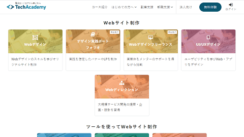
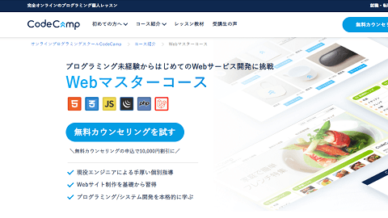
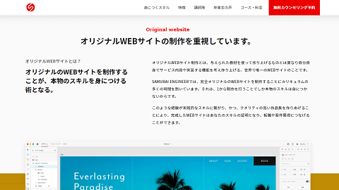
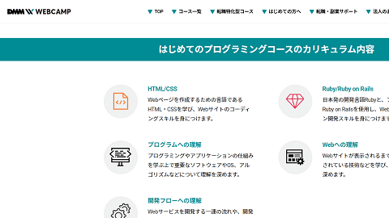

プログラミングスクール一覧
一般的なプログラミングスクールはITエンジニア業界への転職が前提となっているため、年齢制限が設定されていることも多いです。
一方で、既にWebサイトを運営している方のスキルアップや副業、あるいは教養を目的として誰でも学べるプログラミングスクールもあります。ホームページを作成したものの、いまいち思ったサイトに仕上がらない場合、プロの講師によるオンラインプログラミングスクールを受講して、ワンランク上のホームページを目指すとよいでしょう。
WebサイトやWebサービス、アプリ、ゲーム、システム開発など、自分が何をやりたいのかによって選択するプログラミング言語にも違いがありますが、Web制作に関連するプログラミング言語は主にHTMLとCSSになります。
加えて、飲食店やカフェ、美容室などのおしゃれなサイトを作成する際には、PhotoshopやIllustratorなどのWebデザイン系の画像編集スキルも学習しておくと役に立ちます。そのほか、クラウドソーシングなどの副業案件で需要が高いWordPress（PHP）のスキルも役に立つと思います。
■Web制作でおすすめのスキル
- HTML
- CSS
- Photoshop
- Illustrator
- WordPress
- PHP
HTMLとCSSは独学でも習得が可能ですが、プログラミングスクールを利用して体系的に学んだ方が習得する知識の漏れがなく、効率的に習得することができますし、その後の副業案件などのサポートを得られる点でもメリットが大きいといえるでしょう。
Web制作系のオンライン・プログラミングスクール一覧
一般的に、プログラミングスクールはIT業界にエンジニアとして転職する目的で通う人が多く、就職が前提としてあるため、プログラミングスクールと就職先の企業が連携しており、転職につながりやすいメリットがあります。
あるいは、副業の案件もらって副業収入を得る目的でプログラミングスクールを受講する人もいますし、既にエンジニアとして活躍されている方が、さらなるスキルアップを目指して受講されるケースもあります。
それぞれの目的によって最適なコースが異なるため、あなたの目的に合ったプログラミングスクールを選択されるとよいでしょう。
■テックアカデミー

テックアカデミーは多種多様なコースが用意されているオンラインで受講できるプログラミングスクールです。「エンジニア転職保証コース」については、32歳以下の年齢制限がありますが、それ以外のコースに年齢制限はありません。
Web制作に関しては、「はじめての副業コース」や「Webデザインコース」、「WordPressコース」、「Wixコース」などが多彩に用意されており充実しています。
■CodeCamp

CodeCampでは「Webマスターコース」や「デザインマスターコース」、「WordPressコース」などがあります。転職支援の「CodeCampGATE」については、主に20代の大学生や社会人が対象となっていますので、学習のみの場合は通常の「CodeCamp」のコースのなかから選択されるとよいでしょう。
→ CodeCamp
■侍エンジニア

侍エンジニアのWeb制作関連では「Webデザインコース」があります。
そのほか、サブスク型の「侍テラコヤ」もあり、月額2,980円(税込3,278円)から始めることもできます。
■DMM WEBCAMP

DMM WEBCAMPには、Webデザインなどが学べる通常コースのほか、転職特化型コースの「COMMIT」や「PRO」などがあります。
学習のみの場合は通常のDMM WEBCAMPを選択されるとよいでしょう。
以上、転職や就職の目的以外でも利用できるWeb制作系のオンラインプログラミングスクールをご紹介しましたが、資金と時間に余裕がある方は検討されてみるとよいでしょう。